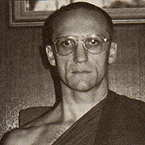

|
WHAT IS IMPORTANT  |
Venerable Pasanno (Reed Perry) was born in La Pas, Manitoba in Canada.
He studied History at the University of Winnipeg. After graduating he
spent some time travelling in India, and from there went to Thailand. |
|
This Teaching is translated from a discourse given in the Thai language
by Venerable Pasanno at Buddhamonton (Buddhamandala) near Bangkok in
September, 1987. It was offered during a week of formal meditation instruction
and practice dedicated to His Majesty King Bhumibol on the occasion
of his 60th birthday. THE BUDDHA OFFERED HIS TEACHING TO THE WORLD with the intention of showing a way to know Truth -- Dhamma. His life-long gesture of renunciation was made so we could personally know this Truth. The fact that these Teachings are still with us shows that they have been put to good use by both lay and ordained people alike. It is important, however, that we understand the need for personal contemplation of these Teachings for their true value to arise. With such personal contemplation, if it is right, we can come to sense the completeness, coolness and calm that they offer. As a foreigner living here in Thailand, I find life as a Buddhist monk extremely beneficial. Sometimes people visiting our monastery, Wat Nanachat, ask me how long I've been a monk. 'Over ten years,' I tell them. 'Is it good?' they like to ask. 'If it wasn't any good,' I reply, 'why would I have spent over ten years living this way? I could be doing all sorts of other things.' It is because I personally see the value of this Way that I live it. Without clear understanding of the processes of our hearts, we create all kinds of problems. We become hot and bothered and are dragged about by emotional states. For there to be personal and global peace, these states need to be understood: the ways of the heart need to be seen clearly. This is the function and value of Dhamma. In contemplating the Buddhist Way, it is important to see that there is absolutely no obligation or intimidation involved. Whether we take it up or not is our choice, we have complete freedom in this regard -- the Buddha only offered us an introduction to the Path. There is no external judge checking up on us. He pointed out that which leads to true success, to liberation, peace and wisdom; and also that which leads to failure and confusion. No external authority is making absolute statements about what is good and bad, right and wrong, and nobody is going to punish us if our preference is not to follow. However, observe that there is always that within our own hearts that knows what we are doing. So it is important that we consider together how to actually use the Buddha's Teachings and realise for ourselves their true value. We have all heard many times about the Four Noble Truths and The Eightfold Path. Maybe we have heard about them to the point where we take them for granted; we don't think they are so important any more. But these Teachings are actually referred to as 'The Heart of the Buddha's Way'. Throughout the forty-five years of his teaching the Buddha never changed or abandoned them. Last week in our monastery I was unable to do walking meditation because I had sprained my ankle. I would join the community for the sitting period and then when it came time for walking I would go back to my hut. I made use of the time to go over some of the chanting that we do. Many times I went over the Buddha's first Discourse -- the Dhammacakkappavattana Sutta -- which contains The Four Noble Truths and the Eightfold Path. As a result I discovered many valuable points. Let us first consider the context in which these Teachings were offered. The Buddha had spent six long years striving to see for himself the Truth. He had undergone an incredible amount of hardship -- not like meditators these days, who make a lot of fuss if conditions are not exactly how they want them. When the Perfect Enlightenment eventually took place he carefully considered exactly how to go about sharing his realisation. He was thirty-five years of age at the time, not old and senile -- and, as he had been brought up a prince he had had the best education available. He was in the prime of his life and fully capable of articulating his understanding. So he wasn't going to hand out the Teachings to just anybody. He decided that his five companions during the time of his asceticism were most suited. They were totally sincere in their efforts, well experienced and intelligent. He then spent several weeks walking to where they were staying. When eventually he reached them, he gave the Teachings of the Four Noble Truths and the Eightfold Path. So these Teachings are not common and insignificant. The fact that we have heard and talked about them many times means we run the risk of their becoming mere theory for us. However, if we were to talk in a worldly sense about achieving something, we would understand that it would of course require effort; likewise in the case of the Eightfold Path. If we make the right effort then realisation can take place. Now let us consider what we mean by 'right effort'. The Buddha gave an example of throwing a stick into a river. If that stick didn't run aground on either the right bank or the left, and if it didn't sink, then it would definitely reach the sea. In terms of our practice, the left and right banks are the extremes of clinging to pleasure -- kamasukhallikanuyogo -- and clinging to pain -- attakilamathanuyogo. Not sinking means not relinquishing effort. If it wasn't for becoming caught in sensuality, indulging in negativity and giving up making effort, we would reach Nibbana -- Peace. This is one of the laws of nature. A true appreciation and honest accordance with the Way shows us that it must be like that. The Eightfold Path is called the Middle Way, which means our effort must be in the right amount. If our actions of body and speech are not in harmony with this Way; if we are getting caught up in seeking sense pleasure and really indulging in states of anger and irritability, then definitely it is impossible to see things as they actually are. We must constantly endeavour to make the right kind of effort or we will end up like the stick, and sink. When we are feeling enthusiastic we can easily give ourselves to the practice. But it can also happen that at times we are totally disillusioned, even to the extent that we forget completely the original confidence and faith we had. But that is natural. It is like swimming a long way; we become tired. We don't need to panic; simply be still for a while. Then when we have regained strength, continue. Just don't sink ! Understand that much: in accordance with nature, that state will change. Despair, if that is what has arisen, will pass. Just keep practising. Observing our minds and seeing how our attitudes are continually changing shows us that impermanence is natural. Understand how necessary this kind of contemplation of Dhamma is in our lives. It is like nourishment to the heart. If we don't have clear understanding, then it is as if something is missing. Often people who visited Ajahn Chah would say they didn't have time to practise. They'd say they had too many commitments. He would ask them: 'Do you have enough time to breathe?' They always replied, 'Oh yes! It's natural to breathe.' Isn't cultivating Dhamma as important as breathing? If we stop breathing then we die. If we are not established in a right understanding of the Truth of the Way Things Are, then also we die; we die from that which is truly good, from true ease and true meaning. If we are lacking the richness of truth in our hearts, then when we die and they cremate us, our lives will be worth no more than the handful of ashes we produce -- and that's not much! We must investigate how to live in a way that truly accords with what the Buddha taught. Surely then we could live in harmony without conflicts, difficulties and problems to resolve. Sila (morality) is that which shows us this Middle Way. It points to the avoidance of the extremes of pleasure and pain -- it means knowing the right amount. When we live in the Middle Way regarding action of body and speech then we don't cause offence to others; we do what is appropriate for human beings. The practice of formal meditation is to train our minds and hearts to stay in the Middle Way. These days, many people who meditate try to force their minds to be as they want them to be. They sit there arguing with their thoughts; if their attention wanders they forcibly bring it back to the breath. Too much forcing is not the Middle Way. The Middle Way is the ease that arises naturally in the mind when there is the right effort, right intention and right awareness. When practice is 'right' and there is ease of mind, we can simply watch the different states that arise and consider their nature. We don't need to argue with anything. Arguing only causes restlessness. Whatever emotion arises is within the domain of our awareness, and we simply watch. Whether it's joyful or the absolute opposite, all experiences are within the boundaries of our awareness. We just sit, watch, contemplate and recognise them; they will naturally cease. Why do they cease? Because that is their nature. It is this realisation of the true nature of change that strengthens and stills the mind. With such insight (pañña) there is tranquillity (samadhi) and peace. The Buddha's wisdom is knowing the right amount. It doesn't mean knowing everything about everything, but knowing impermanence, knowing suffering, knowing selflessness. The reason we get caught in seeing things as other than they really are is our lack of wisdom. With wisdom we know how to let go; to let go of craving, let go of clinging, let go of beliefs. We let go of the tendency to always see things in relation to a self. What we call 'Me' is merely a convention; we were born without names. Then somebody gave us a name and after being called it for a while, we start to think that a thing called 'me and mine' actually exists. Then we feel we have to spend our lives looking after it. The wisdom of the Buddha knows how to let go of this 'self' and all that pertains to it: possessions, attitudes, views and opinions. It means letting go of the opportunity for suffering (dukkha) to arise. It means giving occasion for seeing the true nature of things. So cultivating the Eightfold Path develops what is 'right' for human beings. Through the practice of discipline, tranquillity and wisdom (sila, samadhi, pañña) we can live in harmony. Continually being caught up in extreme states is the result of selfishness; of not knowing the right amount; of not knowing the Middle Way. This Eightfold Path is a job that we need to do. If done carefully and correctly the right result will appear. On reciting the Buddha's First Discourse last week I was reminded of how the Eightfold Path actually takes effect. It says in the sutta: Cakkhukarani, ñanakarani, upasamaya, abhiññaya, sambodhaya, nibbanaya samvattati. Which means that this Path functions by opening the 'Eye of Dhamma' -- cakkhukarani; 'giving rise to insight' -- ñanakarani; 'giving rise to peace' -- upasamaya; 'giving rise to knowing accurately' -- abhiññaya; 'to knowing fully' -- sambodhaya; and to 'realising perfect freedom' -- nibbanaya samvattati. This is the complete Path that the Buddha teaches. It is a Path that, when cultivated, opens the eye that sees the Dhamma, knows the Dhamma, and becomes the Dhamma. This is the eye that sees that any condition that arises also ceases. In the scriptures we read, that when the 'Eye of Dhamma' is opened, when we see clearly the way things are, then we 'Enter the Stream of Dhamma'. It is only this knowledge that arises from the practice of the Eightfold path which causes defilements to diminish, brings peace to the heart, and eventually frees us from all suffering. Therefore it is of supreme importance to all of us. The Eightfold Path has this function -- it is something that really works. How we practise the Buddha's Teachings depends on how we view them. It depends on what we consider as having value. Please do try to investigate and see that your lives accord with the Buddha Way. |
| Home Page |